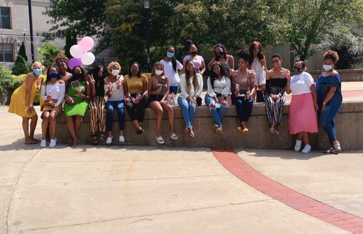
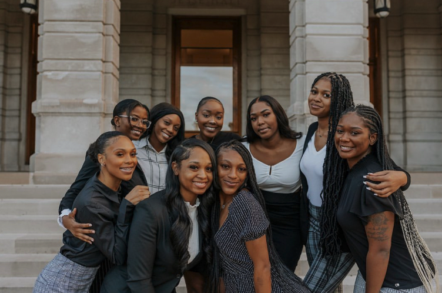
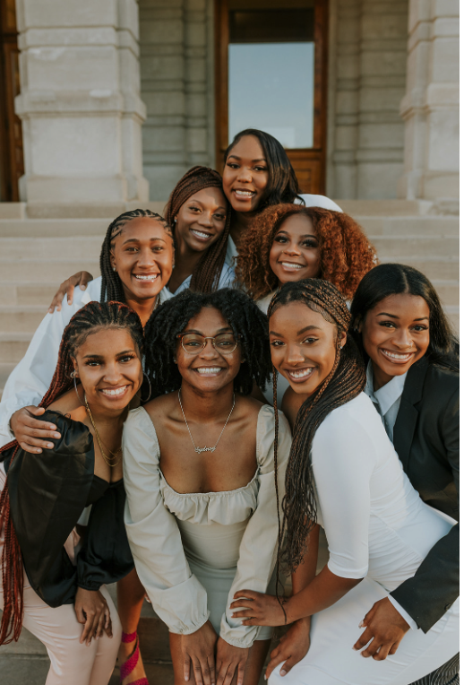
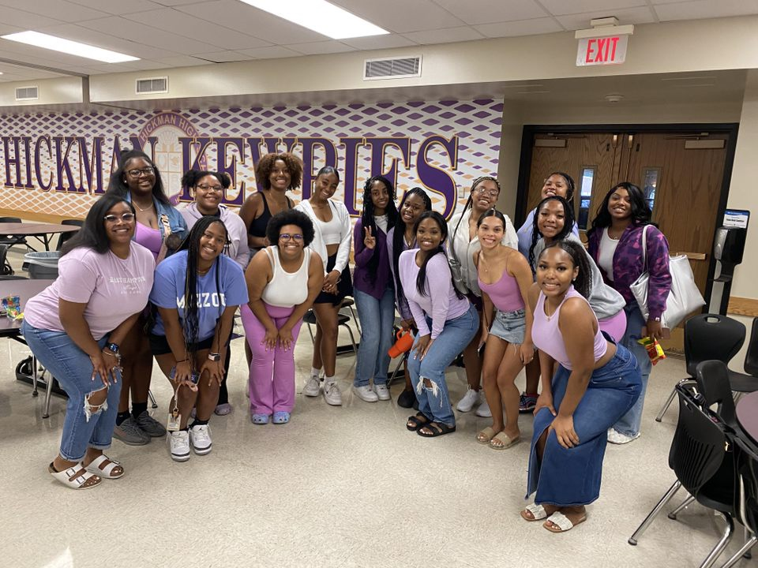

I’m telling a story about the first Mizzou organization I joined as a freshman coming to Mizzou. Promoting, Advocating, Sisterhood, and Service (P.A.S.S.) is an organization that mentors highschool girls at Hickman High School to help them grow mentally, emotionally, and academically. This is the first organization I joined on campus that made me feel welcomed and I found people who I call my sisters till this day. The story will show how I worked my way up to leadership in the organization.
This is my first introduction to P.A.S.S where I met all of the mentors in the program. I am in the gold shirt, kind of in the middle. This picture was taken in September of 2020.
After a year of being in the program, I applied for executive board and made it! My role was social media coordinator for P.A.S.S. This picture is our executive pictures and I am in the back row in the 4th position from reading left to right. This picture was taken October of 2021.
Going into the next school year, the former president of P.A.S.S. told me that she loved my commitment in the program and asked me if I wanted to take on the role as Vice President for 22-23. It was super nerve-wracking but I said yes. Here are our executive pictures, and me at the top in the photo in my new profound role as VP. This picture was taken in November of 2022.
Yes, I am officially the President of Promoting, Advocating, Sisterhood, and Service. At first, I did NOT want to accept this role but the former president told me she didn’t know who else could do it. I accepted the role and I am currently leading this amazing group of ladies. This is our executive board photo for this year and I am sitting in the middle. This picture was taken in October of 2023.

Here is a picture of our first day in Hickman High School and me leading as President. The picture shows some of our Mizzou mentors. I don't have as many pictures with the mentees because they need media release forms since they are underage. In this picture I am on the left side doing a sorority girl squat. This picture was taken in September of 2023.
